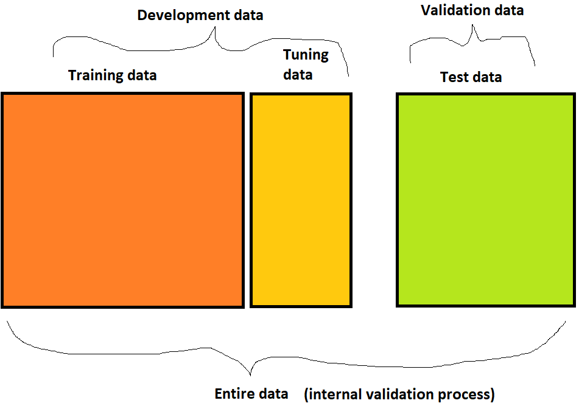

Chapter 8 Model Development Considerations
- Watch the video describing this chapter

8.1 Why Machine learning?
Let us assume that our aim is to build a clinical diagnostic tool or risk prediction model.
- As we have seen earlier, parametric (linear or logistic) regression models are capable of producing prediction models.
- relies on expert knowledge to select covariates
- Parsimony vs better prediction
- There are different Machine Learning (ML) methods that can deal with
- multicollinearity (e.g., LASSO)
- model-specification: interaction term, polynomial or other complex functional form (e.g., tree-based)
- potentially better predictive ability by utilizing many learners (e.g., super learner)
- parametric methods are efficient, but analyst exactly needs to know the model-specification to get the best results
- nonparameteric methods are not as efficient, but less restrictive
- some data adaptive methods are good at transforming the data and find optimal model-specification
- super learner can combine the predictive ability of different type of learners (parametric vs. not)
- ability to handle variety of data (e.g., image)
- ability to handle larger amount of data (e.g., large health admin data; high dimensional data) in identifying variables that are risk factors for the outcome that may not be easily identified by the subject area experts (e.g., may offer new knowledge)
Analyst should be absolutely clear why they are using a ML method. Contrary to popular belief, ML method may not always provide better results!
REMINDER: A systematic review shows no performance benefit of #machinelearning over logistic regression for clinical prediction models (https://t.co/NA54aJoKHc)
— Gary Collins 🇪🇺 (@GSCollins) November 1, 2021
-> "Improvements in methodology and reporting are needed"#keepitreal #dontbelievethehype #mlwtitter #statstwitter pic.twitter.com/NYZheoU5ZS
8.2 Data pre-processing
Centering will make the mean of variables 0. Scaling the variables will produce a common standard deviation (1). Often these help in bringing numerical stability. Continuous variables may require some transformation to remove skewness or outlier issues of the data.
Dichotomising continuous measurements (also known as throwing away precious information - that someone has consented for you to use) is still disappointingly common today.
— Gary Collins 🇪🇺 (@GSCollins) November 10, 2021
Many papers on this, but a good starting point is
-> https://t.co/dEU7etTkaR#statstwitter #epitwitter pic.twitter.com/UaC84LNFFd
8.3 Missing data considerations
"Missing data is poorly handled and reported in prediction model studies using #machinelearning: a literature review" --> https://t.co/8qXU5GTy9F
— Gary Collins 🇪🇺 (@GSCollins) November 18, 2021
Looks like this will feed into and inform @TRIPODStatement-AI --> https://t.co/a1oFJRj4k4#mltwitter #statstwitter #ML4HC pic.twitter.com/BHJ6DIzrGg
The paper reports and recommends (emphasis added):
- “Although many types of machine learning methods offer built-in capabilities for handling missing values, these strategies are rarely used. Instead, most ML-based prediction model studies resort to complete case analysis or mean imputation.”
- “The handling and reporting of missing data in prediction model studies should be improved. A general recommendation to avoid bias is to use multiple imputation. It is also possible to consider machine learning methods with built-in capabilities for handling missing data (e.g., decision trees with surrogate splits, use of pattern submodels, or incorporation of autoencoders).”
8.4 Data hungry methods
- Regression methods require at least 10 events per variable (EPV)
EPV: ” … the one in ten rule is a rule of thumb for how many predictor parameters can be estimated from data when doing regression analysis … while keeping the risk of overfitting low. The rule states that one predictive variable can be studied for every ten events.”
- Single ML methods may require as 50-200 EPV (depending on which method is chosen). See Chapter 3 of Steyerberg et al. (2019)
- Often simpler models are chosen when sample size is not high.
- Variable selection via LASSO may be helpful to reduce noisy variables from the model.
8.5 Model tuning
Hyperparameters are the parameters that are determined by the analysts, and stays the same during the learning process. Often it is the case that analysts do not know which hyperparameter selection will provide better results, and the analyst may need to do a manual search (based on best guesses) or grid search to find out the best set of hyperparameter.
For logistic regression, one example of hyperparameter could be optimization algorithm for fitting the model:
- Newton–Raphson
- Fisher Scoring or Iteratively Reweighted Least Squares (IRLS)
- Hybrid (start with IRLS for initialization purposes, and then Newton–Raphson)

Part of the reason these methods may require more time to fit is because of existence of many parameters needing to be optimized to obtain better accuracy of the training model. These are usually known as hyperparameters, and the search process is known as hyperparameter tuning.
Usually training and tuning datasets are used to tune the model for finding better hyperparameters.
To enhance reproducibility, cross-validation could also be used in the training and tuning process.
Validation set and tuning set should be different. If the validation set was used for tuning, then the trained model can still be subject to overfitting.
8.6 Time resource requirements
Some methods are inherently based on repeated fitting of the same candidate learner or model in different data (Type - I).
Ensemble learning combines predictive ability of many candidate learners on the same data. Need to be careful which candidate learner are selected (Type - II; needs variety).
Both of these scenarios may require significantly more time. Also, even some single candidate learners could be time intensive (e.g., deep learning with many layer).
It is a good idea to report the computing time.
In this chapter, we will talk about considerations for choosing a machine learning method.